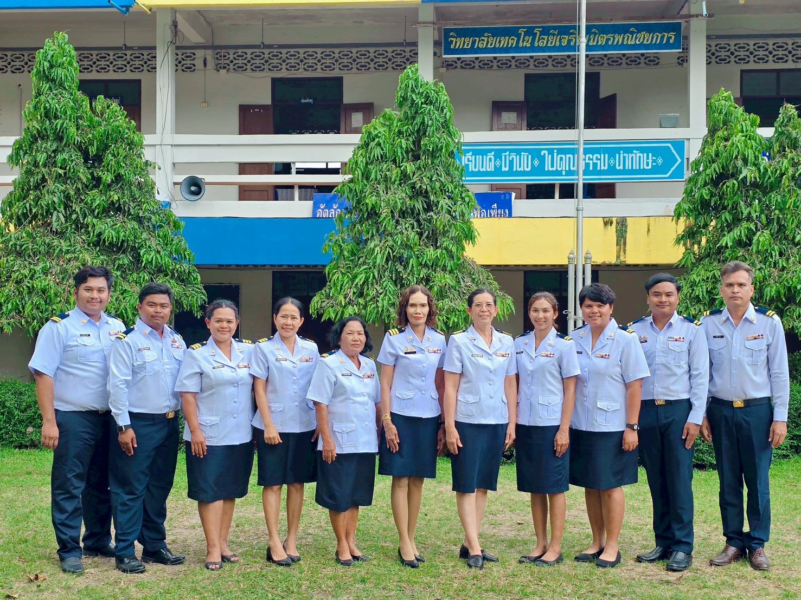
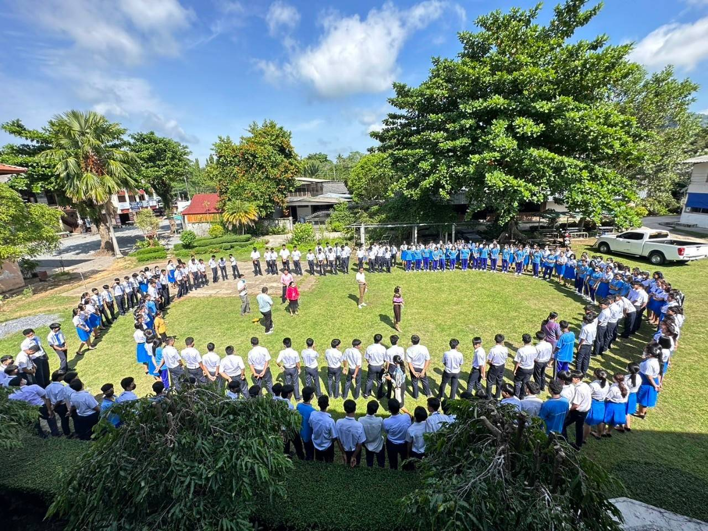

วิทยาลัยเทคโนโลยีเจริญมิตรพณิชยการ
CHAROENMIT COMMERCIAL TECHNOLOGICAL COLLEGE
หน้าหลัก
เกี่ยวกับเรา
ข่าวสาร
กิจกรรม
ติดต่อ
เอกสาร
แนะนำสถานที่ฝึกงาน
ข่าวประชาสัมพันธ์


นางสาวนัตตาภรณ์ โชติรุ่งโรจน์
ผู้อำนวยการวิทยาลัยเทคโนโลยีเจริญมิตรพณิชยการ
 นางสาวนัตตาภรณ์ โชติรุ่งโรจน์
นางสาวนัตตาภรณ์ โชติรุ่งโรจน์
 นางสาวนัตตาภรณ์ โชติรุ่งโรจน์
นางสาวนัตตาภรณ์ โชติรุ่งโรจน์